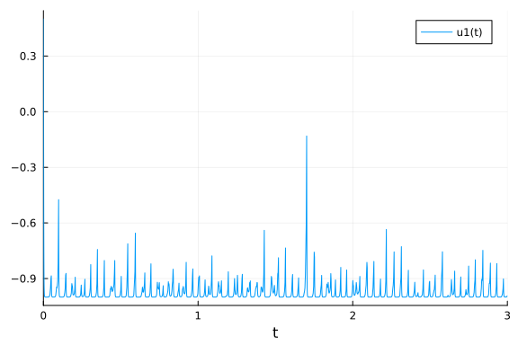

Quadratic Stiffness Benchmarks
Quadratic Stiffness
In this notebook we will explore the quadratic stiffness problem. References:
The composite Euler method for stiff stochastic differential equations
Kevin Burrage, Tianhai Tian
And
S-ROCK: CHEBYSHEV METHODS FOR STIFF STOCHASTIC DIFFERENTIAL EQUATIONS
ASSYR ABDULLE AND STEPHANE CIRILLI
This is a scalar SDE with two arguments. The first controls the deterministic stiffness and the later controls the diffusion stiffness.
using DiffEqProblemLibrary, StochasticDiffEq, DiffEqDevTools
using DiffEqProblemLibrary.SDEProblemLibrary: importsdeproblems; importsdeproblems()
import DiffEqProblemLibrary.SDEProblemLibrary: prob_sde_stiffquadito
using Plots; gr()
const N = 1010prob = remake(prob_sde_stiffquadito,p=(50.0,1.0))
sol = solve(prob,SRIW1())
plot(sol)
prob = remake(prob_sde_stiffquadito,p=(500.0,1.0))
sol = solve(prob,SRIW1())
plot(sol)
Top dts
Let's first determine the maximum dts which are allowed. Anything higher is mostly unstable.
Deterministic Stiffness Mild
prob = remake(prob_sde_stiffquadito,p=(50.0,1.0))
@time sol = solve(prob,SRIW1())0.000165 seconds (2.08 k allocations: 93.578 KiB)@time sol = solve(prob,SRIW1(),adaptive=false,dt=0.01)0.000148 seconds (2.20 k allocations: 98.656 KiB)@time sol = solve(prob,ImplicitRKMil(),dt=0.005)0.000060 seconds (377 allocations: 16.812 KiB)@time sol = solve(prob,EM(),dt=0.01);0.000139 seconds (1.59 k allocations: 80.781 KiB)
retcode: Success
Interpolation: 1st order linear
t: 302-element Array{Float64,1}:
0.0
0.01
0.02
0.03
0.04
0.05
0.060000000000000005
0.07
0.08
0.09
⋮
2.9299999999999815
2.9399999999999813
2.949999999999981
2.959999999999981
2.9699999999999807
2.9799999999999804
2.9899999999999802
2.99999999999998
3.0
u: 302-element Array{Float64,1}:
0.5
0.1990029211123852
-0.07466078087109371
-0.6002654155227148
-0.8540743925715729
-0.9620748221038411
-1.0006849724929916
-0.9998995995255848
-1.0000061367343545
-0.9999994064330947
⋮
-1.0
-1.0
-1.0
-1.0
-1.0
-1.0
-1.0
-1.0
-1.0Deterministic Stiffness High
prob = remake(prob_sde_stiffquadito,p=(500.0,1.0))
@time sol = solve(prob,SRIW1())0.000940 seconds (14.40 k allocations: 548.844 KiB)@time sol = solve(prob,SRIW1(),adaptive=false,dt=0.002)0.000597 seconds (10.60 k allocations: 438.906 KiB)@time sol = solve(prob,ImplicitRKMil(),dt=0.001)0.000065 seconds (451 allocations: 18.719 KiB)@time sol = solve(prob,EM(),dt=0.002);0.000536 seconds (7.59 k allocations: 359.406 KiB)
retcode: Success
Interpolation: 1st order linear
t: 1502-element Array{Float64,1}:
0.0
0.002
0.004
0.006
0.008
0.01
0.012
0.014
0.016
0.018000000000000002
⋮
2.9859999999998927
2.9879999999998925
2.9899999999998923
2.991999999999892
2.993999999999892
2.9959999999998916
2.9979999999998914
2.999999999999891
3.0
u: 1502-element Array{Float64,1}:
0.5
-0.23220706093389717
-1.1384420877339305
-0.8492576915171682
-1.133172366777916
-0.86818454032407
-1.108335100899943
-0.876411881818392
-1.092904208491973
-0.9023600723135534
⋮
-0.9999976245765745
-1.0000025863371373
-0.9999977317936903
-1.0000024080032976
-0.999997301184875
-1.000002755148832
-0.9999974155586951
-1.0000024771682556
-1.0000024771699214Mixed Stiffness
prob = remake(prob_sde_stiffquadito,p=(5000.0,70.0))
@time sol = solve(prob,SRIW1(),dt=0.0001)0.001515 seconds (16.31 k allocations: 1.022 MiB)@time sol = solve(prob,SRIW1(),adaptive=false,dt=0.00001)0.117636 seconds (2.10 M allocations: 70.361 MiB)@time sol = solve(prob,ImplicitRKMil(),dt=0.00001)0.281424 seconds (1.00 M allocations: 61.394 MiB, 6.11% gc time)@time sol = solve(prob,EM(),dt=0.00001);0.104087 seconds (1.50 M allocations: 56.205 MiB)
retcode: Success
Interpolation: 1st order linear
t: 300001-element Array{Float64,1}:
0.0
1.0e-5
2.0e-5
3.0000000000000004e-5
4.0e-5
5.0e-5
6.0e-5
7.000000000000001e-5
8.0e-5
9.0e-5
⋮
2.9999200000111856
2.9999300000111857
2.9999400000111858
2.999950000011186
2.999960000011186
2.999970000011186
2.999980000011186
2.999990000011186
3.0
u: 300001-element Array{Float64,1}:
0.5
0.5302268461606926
0.5271985349363482
0.5171336740685825
0.38459491163615883
0.3664925831930108
0.16483558009815447
-0.00781191807905611
0.2356420268211326
-0.1968849304791764
⋮
-1.0
-1.0
-1.0
-1.0
-1.0
-1.0
-1.0
-1.0
-1.0Notice that in this problem, the stiffness in the noise term still prevents the semi-implicit integrator to do well. In that case, the advantage of implicitness does not take effect, and thus explicit methods do well. When we don't care about the error, Euler-Maruyama is fastest. When there's mixed stiffness, the adaptive algorithm is unstable.
Work-Precision Diagrams
prob = remake(prob_sde_stiffquadito,p=(50.0,1.0))
reltols = 1.0 ./ 10.0 .^ (3:5)
abstols = reltols#[0.0 for i in eachindex(reltols)]
setups = [Dict(:alg=>SRIW1()),
Dict(:alg=>EM(),:dts=>1.0./8.0.^((1:length(reltols)) .+ 1)),
Dict(:alg=>SRIW1(),:dts=>1.0./8.0.^((1:length(reltols)) .+ 1),:adaptive=>false)
#Dict(:alg=>RKMil(),:dts=>1.0./8.0.^((1:length(reltols)) .+ 1),:adaptive=>false),
]
names = ["SRIW1","EM","SRIW1 Fixed"] #"RKMil",
wp = WorkPrecisionSet(prob,abstols,reltols,setups;numruns=N,names=names,error_estimate=:l2)
plot(wp)
prob = remake(prob_sde_stiffquadito,p=(500.0,1.0))
reltols = 1.0 ./ 10.0 .^ (3:5)
abstols = reltols#[0.0 for i in eachindex(reltols)]
setups = [Dict(:alg=>SRIW1()),
Dict(:alg=>EM(),:dts=>1.0./8.0.^((1:length(reltols)) .+ 2)),
Dict(:alg=>SRIW1(),:dts=>1.0./8.0.^((1:length(reltols)) .+ 2),:adaptive=>false)
#Dict(:alg=>RKMil(),:dts=>1.0./8.0.^((1:length(reltols)) .+ 2),:adaptive=>false),
]
names = ["SRIW1","EM","SRIW1 Fixed"] #"RKMil",
wp = WorkPrecisionSet(prob,abstols,reltols,setups;numruns=N,names=names,error_estimate=:l2,print_names=true)
plot(wp)
Conclusion
Noise stiffness is tough. Right now the best solution is to run an explicit integrator with a low enough dt. Adaptivity does have a cost in this case, likely due to memory management.
using DiffEqBenchmarks
DiffEqBenchmarks.bench_footer(WEAVE_ARGS[:folder],WEAVE_ARGS[:file])Appendix
These benchmarks are a part of the DiffEqBenchmarks.jl repository, found at: https://github.com/JuliaDiffEq/DiffEqBenchmarks.jl
To locally run this tutorial, do the following commands:
using DiffEqBenchmarks
DiffEqBenchmarks.weave_file("StiffSDE","QuadraticStiffness.jmd")Computer Information:
Julia Version 1.4.2
Commit 44fa15b150* (2020-05-23 18:35 UTC)
Platform Info:
OS: Linux (x86_64-pc-linux-gnu)
CPU: Intel(R) Core(TM) i7-9700K CPU @ 3.60GHz
WORD_SIZE: 64
LIBM: libopenlibm
LLVM: libLLVM-8.0.1 (ORCJIT, skylake)
Environment:
JULIA_DEPOT_PATH = /builds/JuliaGPU/DiffEqBenchmarks.jl/.julia
JULIA_CUDA_MEMORY_LIMIT = 2147483648
JULIA_PROJECT = @.
JULIA_NUM_THREADS = 8
Package Information:
Status: `/builds/JuliaGPU/DiffEqBenchmarks.jl/benchmarks/StiffSDE/Project.toml`
[f3b72e0c-5b89-59e1-b016-84e28bfd966d] DiffEqDevTools 2.22.0
[77a26b50-5914-5dd7-bc55-306e6241c503] DiffEqNoiseProcess 5.0.2
[a077e3f3-b75c-5d7f-a0c6-6bc4c8ec64a9] DiffEqProblemLibrary 4.8.0
[91a5bcdd-55d7-5caf-9e0b-520d859cae80] Plots 1.5.3
[789caeaf-c7a9-5a7d-9973-96adeb23e2a0] StochasticDiffEq 6.24.0
[37e2e46d-f89d-539d-b4ee-838fcccc9c8e] LinearAlgebra
[9a3f8284-a2c9-5f02-9a11-845980a1fd5c] Random
[10745b16-79ce-11e8-11f9-7d13ad32a3b2] Statistics